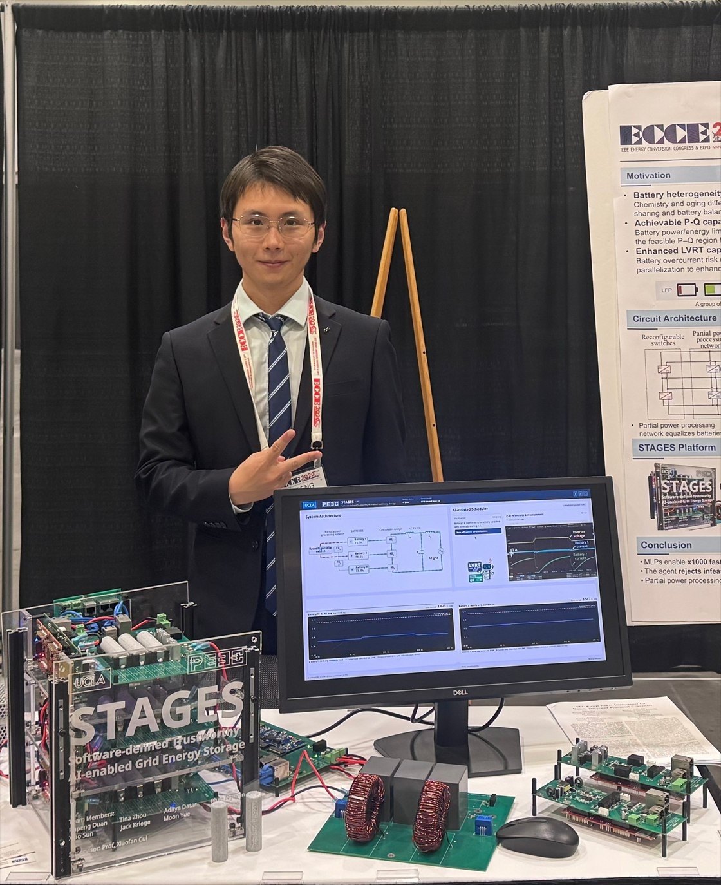

Grid-connected storage
Partial-power converters that balance second-life batteries in grid-forming storage systems.
View projectPh.D. student in Electrical and Computer Engineering
I study power electronics for grid-connected battery storage and AI data centers. At UCLA’s Power Electronics and Energy Control Laboratory, I work with Prof. Xiaofan Cui to model, build, and control power converters.

Partial-power converters that balance second-life batteries in grid-forming storage systems.
View projectGrid-to-chip power delivery, from smoothing GPU load swings to designing rack power supplies.
View 3 projectsDetecting winding and rotor faults from electrical signals and improving torque in motor drives.
View 4 projectsUCLA · Sep 2024 – Sep 2026
I developed a hierarchical battery-balancing architecture for cascaded H-bridge inverters. A statistical design approach increased output power capability by 50% relative to earlier methods.
My partial-power interconnect converter reached 99% peak efficiency during active balancing and improved current sharing during low-voltage ride-through. I built a 200 W grid-forming prototype with CAN and LVDS interfaces and demonstrated it at IEEE ECCE 2026.
UCLA · Jun 2026 – present
I built an electromagnetic transient model that spans the grid interface through the voltage regulator module. In simulations with time-varying, unbalanced GPU loads, my hybrid battery–supercapacitor buffer reduced power fluctuations by 80% and UPS DC-link voltage oscillations by 96%.
UCLA · Sep 2026 – present
I am designing a 1 kW CLLC resonant converter for a 48 V to 12 V DC transformer prototype.
UCLA · Sep 2026 – present
I am designing a 1 kW single-phase totem-pole power factor correction converter for a scaled data center rack power supply.
Zhejiang University · Sep 2022 – Jun 2024
I modeled interturn short circuits in permanent magnet synchronous machines using vector space decomposition. My online detection method uses harmonic-subspace currents and voltages to locate a fault without additional sensors, machine parameters, or prior fault data.
Zhejiang University · Nov 2023 – Jun 2024
Injecting third-harmonic current through a four-leg inverter increased average torque by 18.5% in a three-phase permanent magnet synchronous machine.
Zhejiang University · Jun 2022 – Jun 2024
I used zero-sequence voltage to classify rotor eccentricity and high-frequency injection to detect a single broken rotor bar in an induction motor. I designed a diagnostic board combining a TI C2000 controller and a Cyclone IV FPGA.
Zhejiang University · Sep – Dec 2021
I used parameter identification to detect interturn short circuits in active magnetic bearings.
IEEE Energy Conversion Congress and Exposition (ECCE) · Vancouver, Canada · Oral presentation
IEEE Journal of Emerging and Selected Topics in Power Electronics · 14(3), 2877–2890
Chinese patent · Granted October 9, 2026 · Application publication CN116626486A
IEEE Workshop on Control and Modeling for Power Electronics (COMPEL) · Knoxville, USA · pp. 1–8
IEEE Transactions on Transportation Electrification · 10(4), 9652–9664
IEEE Transactions on Industry Applications · 60(5), 6761–6774
Chinese patent application · CN116559725A · Published August 8, 2023
IEEE International Electric Machines & Drives Conference (IEMDC) · San Francisco, USA · pp. 1–7
University of California, Los Angeles · GPA 3.80/4.00
I work with Prof. Xiaofan Cui in the Power Electronics and Energy Control Laboratory.
My dissertation is titled Modeling, Design, and Control of Grid-Connected Battery Energy Storage and AI Data Centers.
Zhejiang University, Hangzhou, China · GPA 4.00/4.00
Zhejiang University, Hangzhou, China · GPA 3.75/4.00
From fall 2025 through spring 2026, I served as a teaching assistant for three courses.
My median overall TA rating was 8/9 across 189 student ratings.